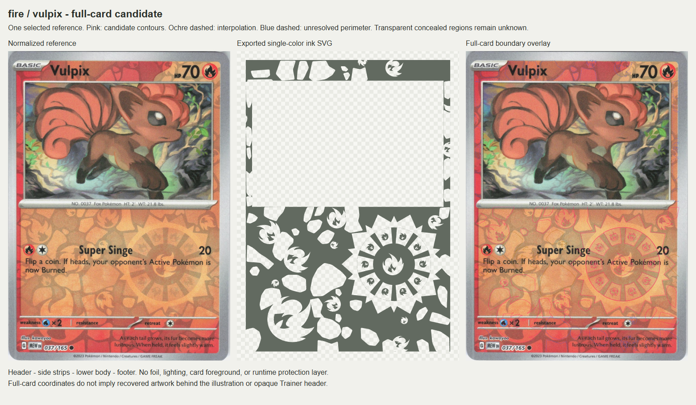
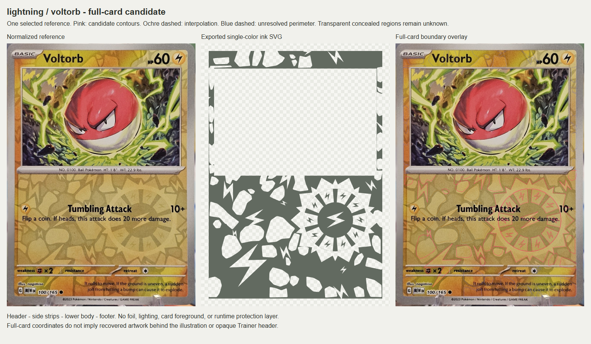
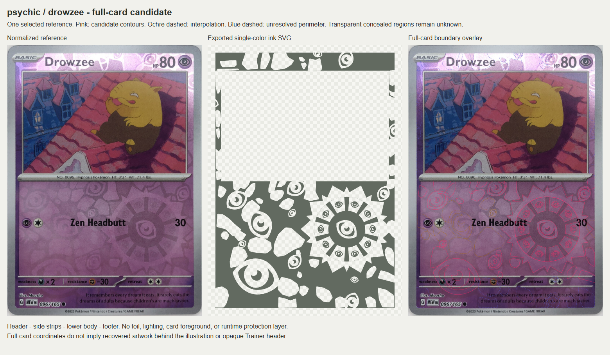
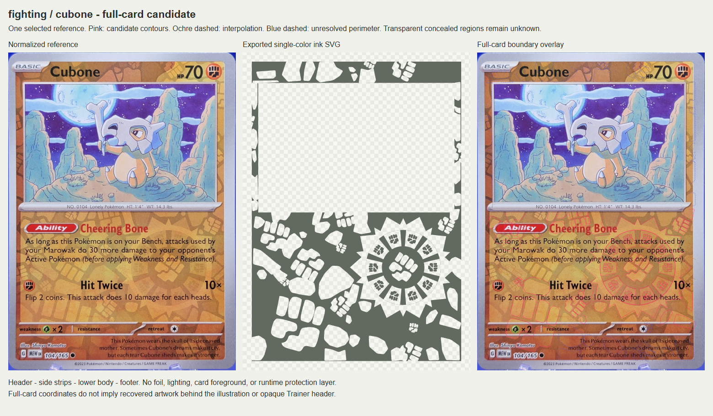
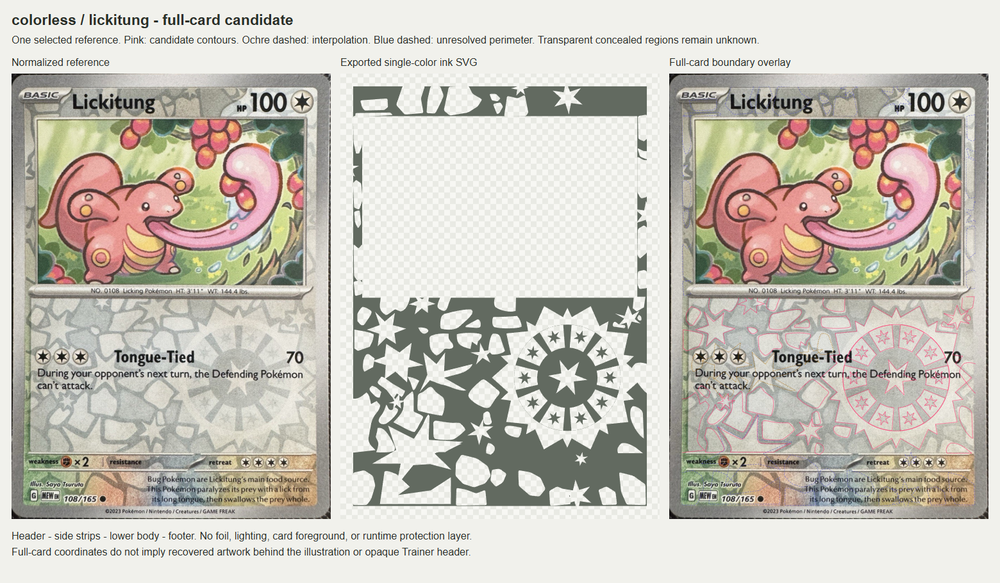
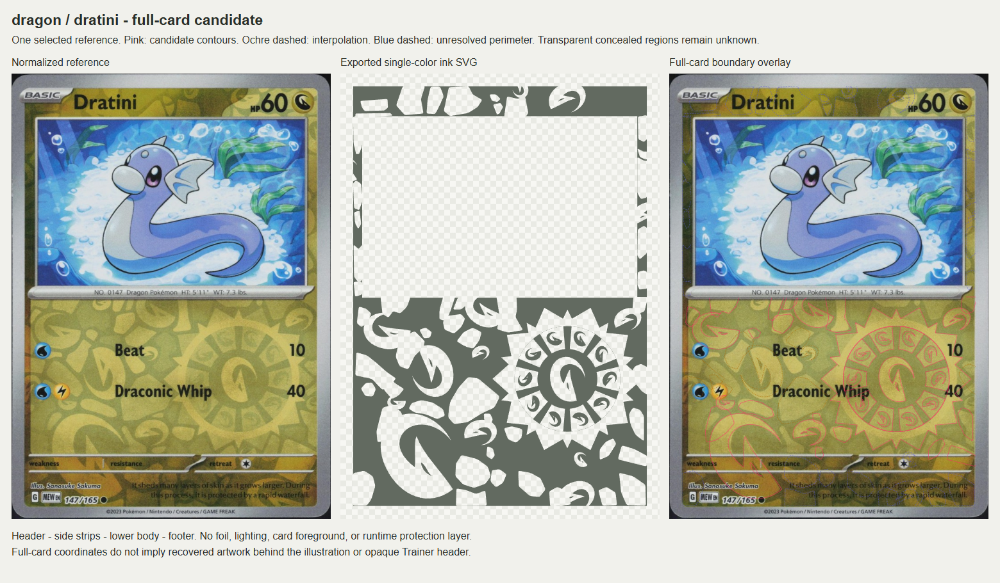
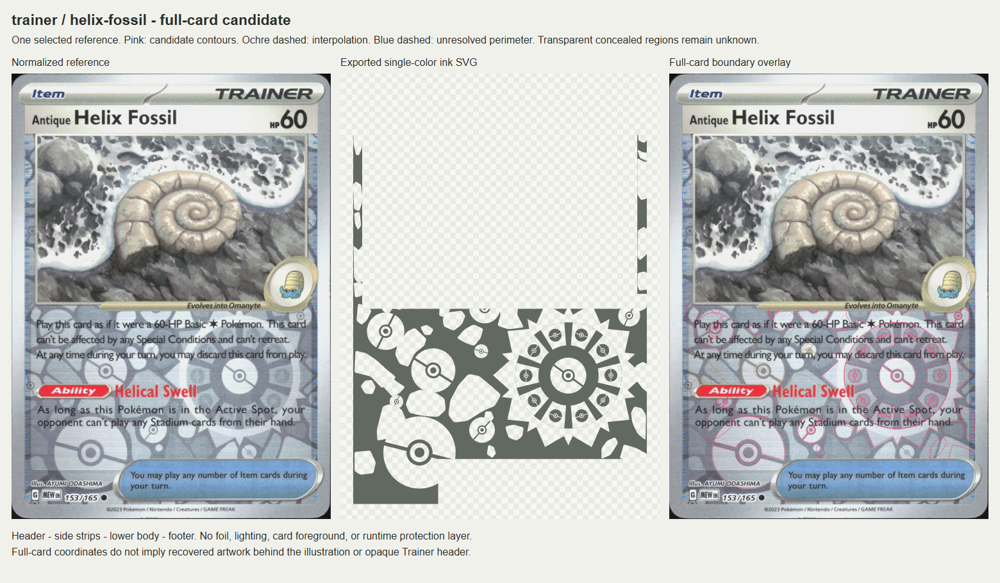
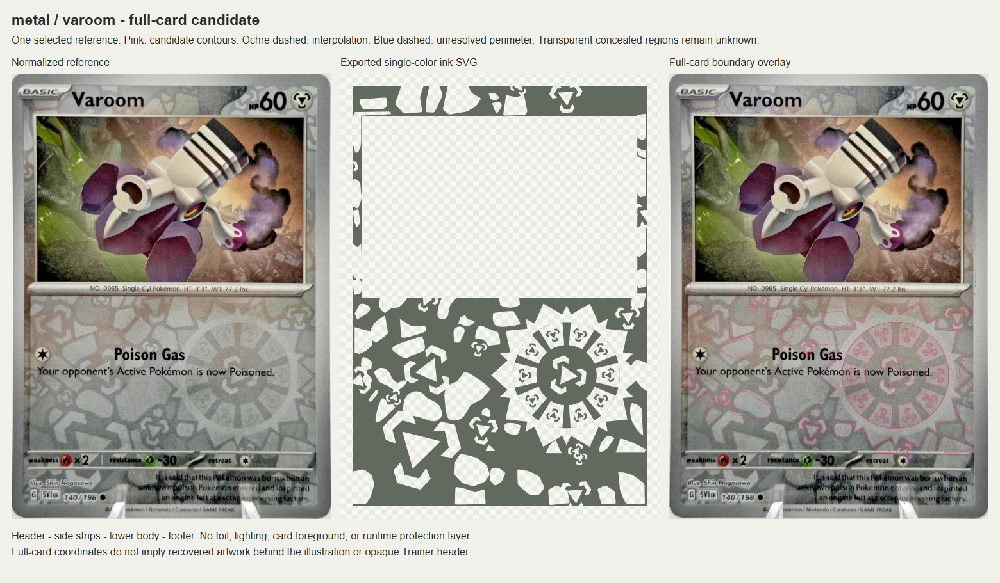

Grass / bulbasaur
Front-facing scan; strong exposed network and central leaf; limited perspective.

Transparent PNG | Editable SVG | Provenance and uncertainty
Fire / vulpix
Large, nearly front-facing photograph with strong exposed flame repetitions.

Transparent PNG | Editable SVG | Provenance and uncertainty
Water / squirtle
High-resolution front-facing scan with clear header, side strips and lower field.

Transparent PNG | Editable SVG | Provenance and uncertainty
Lightning / voltorb
Sharp, evenly exposed pattern; only one attack leaves substantial geometry visible.

Transparent PNG | Editable SVG | Provenance and uncertainty
Psychic / drowzee
High-resolution near-front view; one attack leaves central eye and most lower contours exposed. Header glare limits color evidence.

Transparent PNG | Editable SVG | Provenance and uncertainty
Fighting / cubone
High-resolution near-front view with clear fists and lower field; ability text obscures upper body.

Transparent PNG | Editable SVG | Provenance and uncertainty
Darkness / koffing
Sharp photograph and strong lower-field contrast; one attack. White rules text obscures part of the central glyph.

Transparent PNG | Editable SVG | Provenance and uncertainty
Colorless / lickitung
High-resolution single-attack photograph; existing manually traced contours provide a reviewed starting point.

Transparent PNG | Editable SVG | Provenance and uncertainty
Dragon / dratini
Front-facing scan with clear central and repeated dragon glyphs. Only the left card is normalized.

Transparent PNG | Editable SVG | Provenance and uncertainty
Trainer / helix-fossil
Sharp, nearly front-facing image and distinct Poké Ball shapes; opaque header and rule box limit observable coverage.

Transparent PNG | Editable SVG | Provenance and uncertainty
Metal / varoom
Largest, clearest Metal photograph with a single attack and exposed repeated brackets.

Transparent PNG | Editable SVG | Provenance and uncertainty